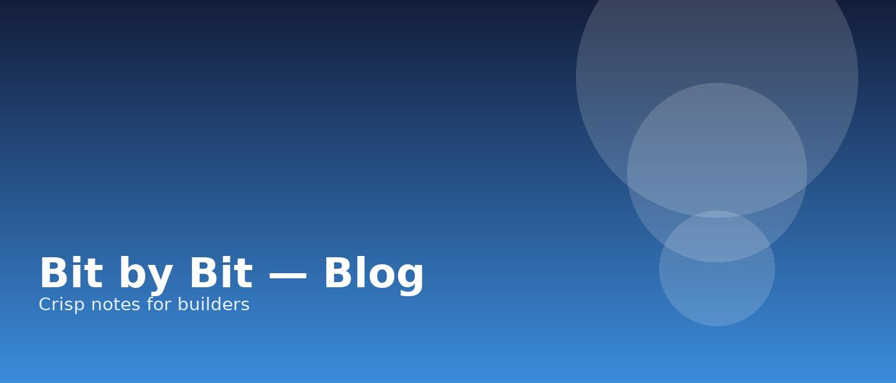

We obsess over speed because users do. In this post we outline a pragmatic budget for LCP, TTFB, and CLS you can adopt today…

Measure with web-vitals, budget with lighthouse, and automate with CI. Our checklist includes perf budgets per route and contract tests for regressions.